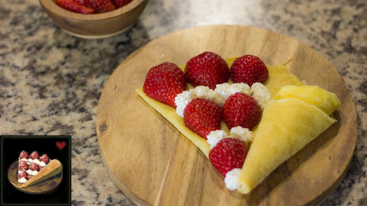

Wildberry Crepe

Description
Even the Legendary Hero makes time for French pastries. To make this fancy dessert in Breath of the Wild, Link needs to gather five items (Fresh Milk, Tabantha Wheat, Bird Egg, Cane Sugar, and Wildberry) which are slighter harder to come by, some of which are available only from certain shops. And yet, this recipe provides no bonus effects other than restoring hearts, making it something to cook only for amusement of the player.
Here is the crepe recipe from Sheikah Plate which looks exactly like Link's version, if not more delicious. Break out the rateau!
Ingredients
Crepes
- 3 eggs
- 1 cup milk, any percentage will do
- 1 teaspoon salt
- 1 cup flour, sifted
- 3-4 tablespoons butter, melted
Filling
- 24-32 small strawberries, 3-4 per crepe
- 1 cup whipping cream or heavy whipping cream
- 1/2 cup sugar plus a few pinches for dusting berries
Steps
- Whisk together eggs and milk until smooth. Slowly add sifted flour and salt and whisk until combined. Add butter and continue whisking until the batter is smooth with no flour lumps.
- Gently press a piece of plastic wrap down into the bowl to rest on top of the batter and cover it entirely. Refrigerate and allow to rest for at least one hour.
- While the batter is refrigerating prepare the berries and whipped cream.
- Cut strawberries in half and lightly cover the cut side in sugar. Allow to sit at room temperature for a few minutes to produce a little syrupy goodness.
- Whipping cream can be made three ways: a stand mixer fitted with a whisk attachment, a blender, or a bowl and hand mixer with a whisk attachment. For any of these options add the whipping cream to the blender or bowl and whisk on high. Slowly add the sugar and continue whisking until stiff peaks form and the cream becomes shiny.
- When the batter is ready gently peel back the plastic wrap. It is perfectly normal for some batter to stick to the wrap. In fact, if it does not, you may not have pressed the plastic down enough. Some butter may have separated at this point. Using a knife or spoon gently cut and turn the batter until uniform.
- Heat pan on medium low until hot. Add butter to cover the surface of the pan. Add 1/2 cup batter to the pan and twist or spread using a rateau until the batter covers the bottom of the pan. Allow to sit for about 1 minute until the bottom sets up. Flip the crepe and cook about 1 minute more until lightly browned. Throw this first crepe away. It usually has too much butter to taste really good.
- Continue adding 1/2 - 2/3 cup batter at a time to the pan without re-greasing the pan and follow step 7 for cooking instructions.
- Remove from pan and immediately pipe or spoon on whipped cream and strawberries. Crepes are best enjoyed hot but are still delicious cold. They do not store well so make and enjoy all your crepes that day!